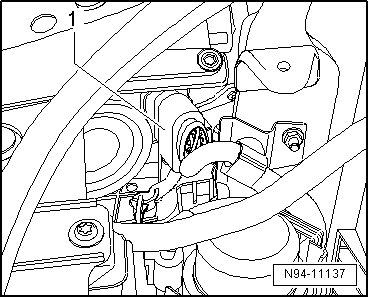
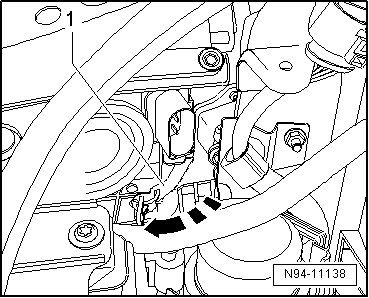
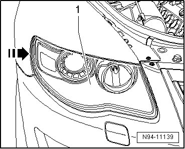
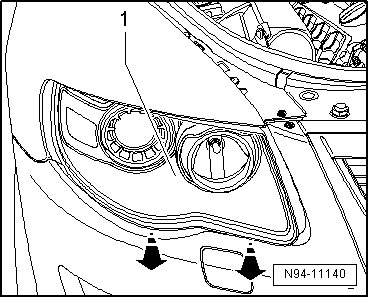

Headlamps
Halogen Headlamps, from 12.06
Headlamps
• It is not necessary to disconnect battery.
• Illustrations depict removal and installation of right headlamp.
Removing
- Switch off ignition, switch off all electrical consumers and remove ignition key.
- Disengage and disconnect harness connector - 1 -.

- Tip locking lever - 1 - in direction of arrow.
Headlamp locking lever - 1 -

- To tip headlamp - 1 -, press inward in - direction of arrow - with balls of hands in rear area.

- Pull the headlamp - 1 - straight forward in the - direction of the arrow - out of the opening in the body.

Installing
Install in reverse order of removal, noting the following:
CAUTION!
• After installing and locking the headlamp with the lever --> [ Headlamp locking lever ] - 1 -, press sideways on the headlamp housing to make sure the headlamp is locked securely.
• If the headlamp is locked but it still turns when pressed on the side, it is installed incorrectly.
• If that is the case, repeat the installation procedure until the headlamp is locked securely.
- Check installation position of headlamp for uniform gap dimensions.
If headlamp has an uneven gap dimension to the body, installation position must be corrected --> [ Headlamps Correcting Installation Position ] Procedures.
- Check headlamp for function.
- Check and adjust headlamp aim if necessary .